4.1. Resumen de Facturas¶
Ubique y seleccione en el menú de ADempiere, la carpeta “Gestión de Ventas”, luego seleccione la carpeta “Consulta de Facturas”, por último seleccione el reporte “Resumen de Facturas”.
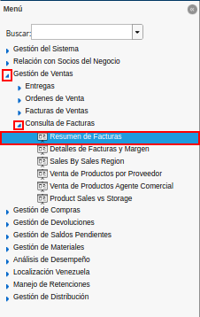
Imagen 1. Menú de ADempiere
Podrá visualizar la ventana “Resumen de Facturas”, que permiten filtrar la búsqueda de la información para el reporte en base a lo requerido por el usuario en su momento.
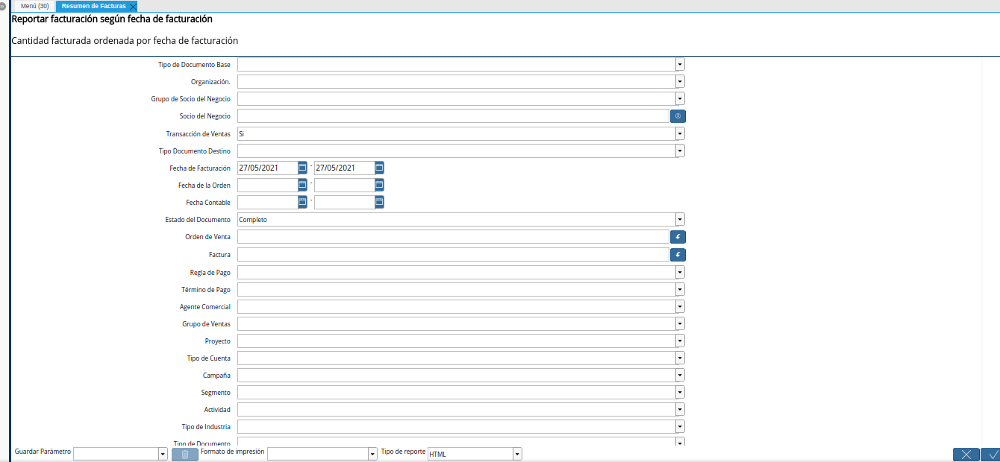
Imagen 2. Ventana del Reporte Resumen de Facturas
Seleccione en el campo “Tipo de Documento Base”, el tipo de documento base por el cual requiere filtrar la información.
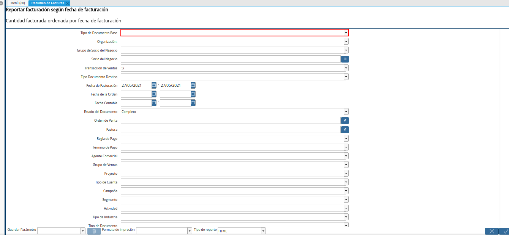
Imagen 3. Campo Tipo de Documento
Seleccione en el campo “Organización”, la organización a la cual pertenecen los registros por los cuales requiere filtrar la información.
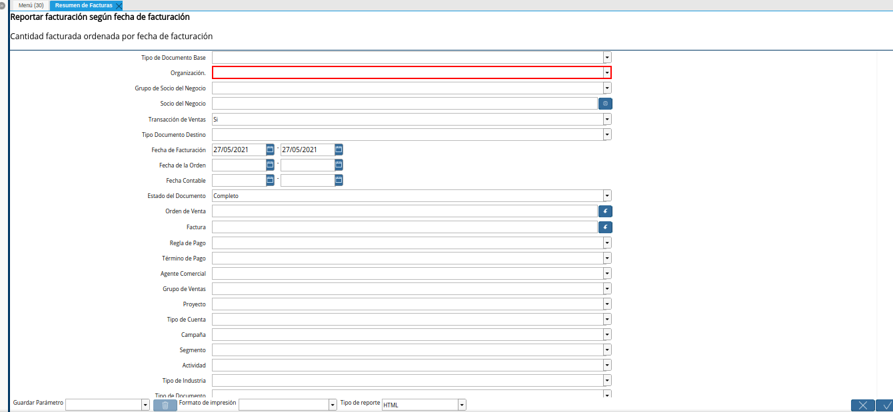
Imagen 4. Campo Organización
Seleccione en el campo “Grupo de Socio del Negocio”, el grupo de socio del negocio por el cual requiere filtrar la información.
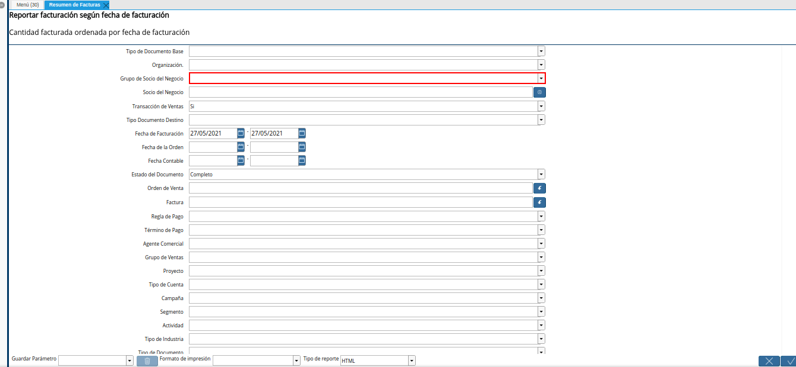
Imagen 5. Campo Grupo de Socio del Negocio
Seleccione en el campo “Socio del Negocio”, el socio del negocio por el cual requiere filtrar la información.
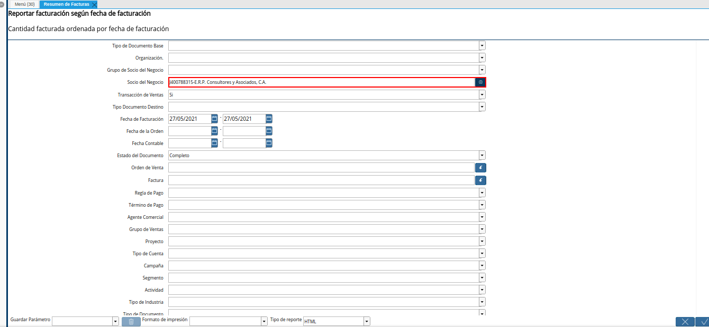
Imagen 6. Campo Socio del Negocio
Indique en el campo “Transacción de Ventas”, si requiere que el reporte sea filtrado por transacciones de ventas o no.
Note
La opción Si: Muestra las facturas de ventas La opción No: Muestra las facturas de compras
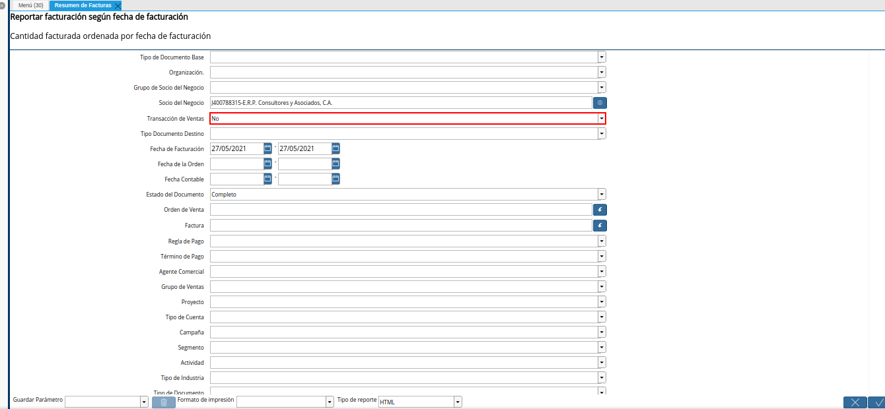
Imagen 7. Campo Transacción de Ventas
Seleccione en el campo “Tipo de Documento Destino”, el tipo de documento destino de los reguistros por los cuales requiere filtrar la información.
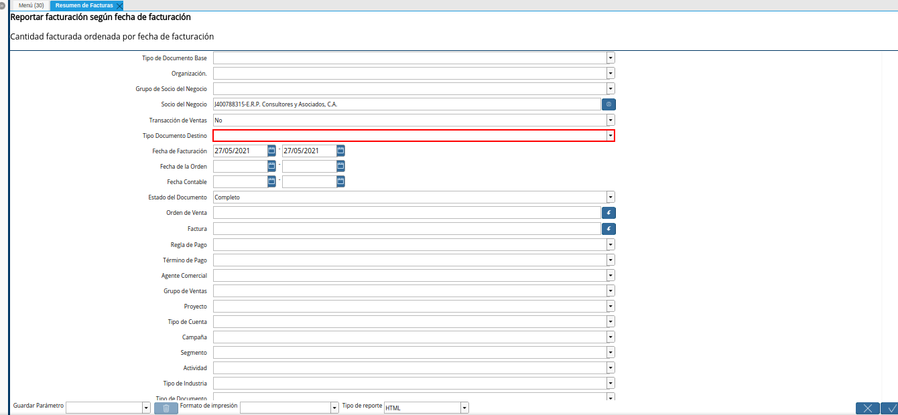
Imagen 8. Campo Tipo de Documento Destino
Seleccione en el campo “Fecha de Facturación”, el rango de fecha de facturación de los registros por los cuales requiere filtrar la información.
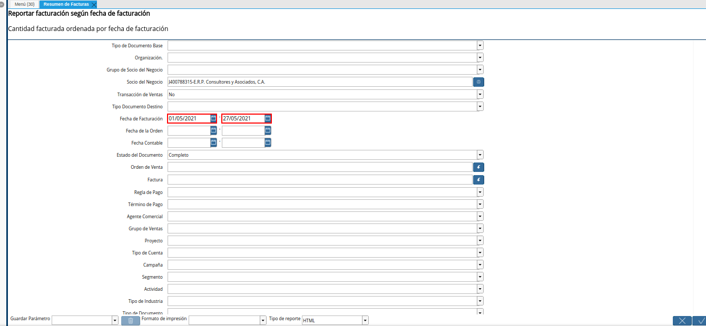
Imagen 9. Campo Fecha de Facturación
Seleccione en el campo “Fecha de la Orden”, el rango de fecha de la orden por la cual requiere filtrar la información.
Imagen 10. Campo Fecha de la Orden
Seleccione en el campo “Fecha Contable”, el rango de fecha contable por la cual requiere filtrar la información.
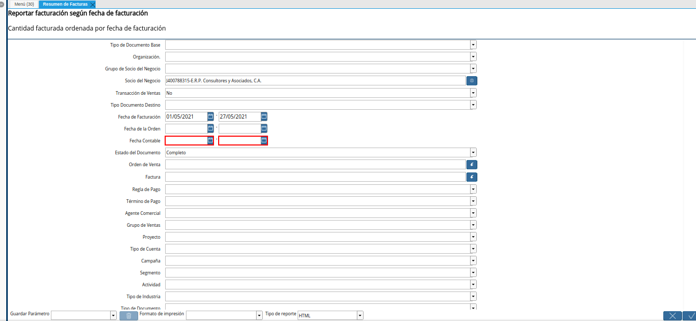
Imagen 11. Campo Fecha Contable
Seleccione en el campo “Estado del Documento”, el estado del documento por el cual requiere filtrar la información.
Note
Se recomienda que preferiblemente sea utilizado el estado de documento “Completo”, porque son los documentos considerados “Válidos”.
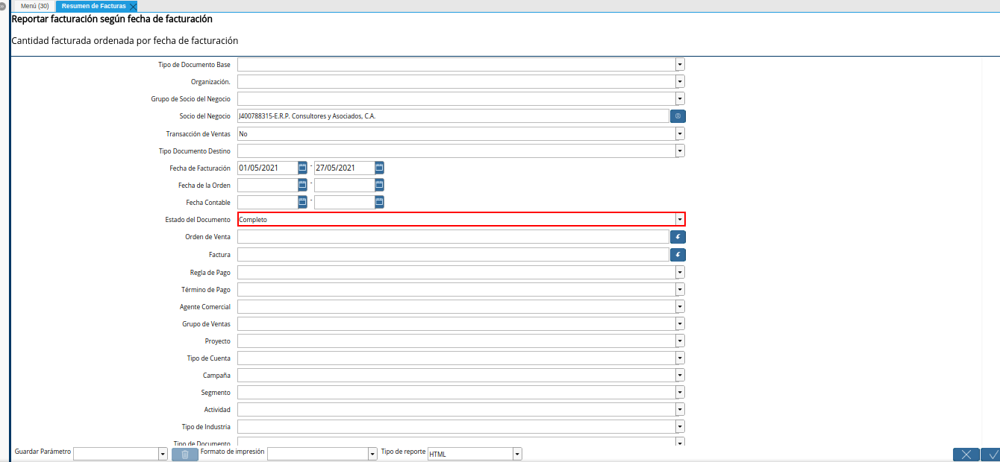
Imagen 12. Campo Estado del Documento
Seleccione en el campo “Orden de Venta”, la orden de venta por la cual requiere filtrar la información.
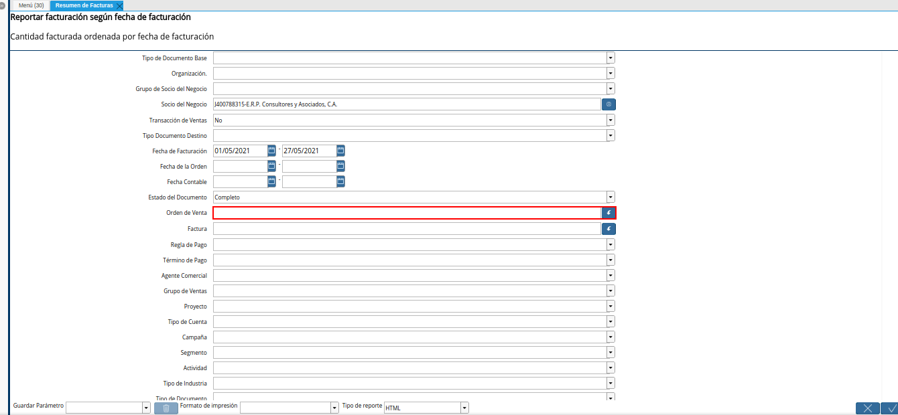
Imagen 13. Campo Orden de Venta
Seleccione en el campo “Factura”, la factura por la cual requiere filtrar la información.
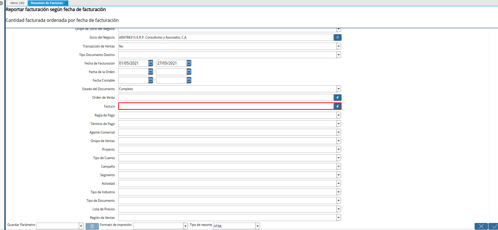
Imagen 14. Campo Factura
Seleccione en el campo “Regla de Pago”, la regla de pago por la cual requiere filtrar la información.
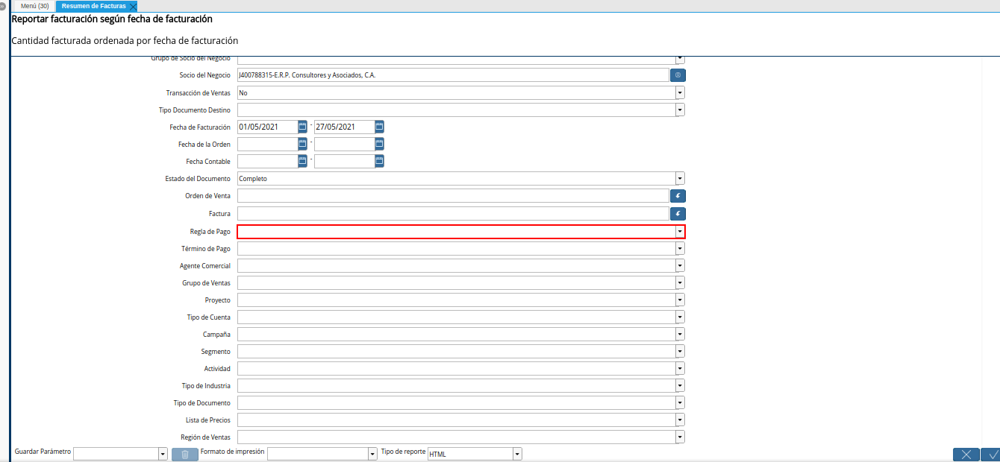
Imagen 15. Campo Regla de Pago
Seleccione en el campo “Término de Pago”, el término de pago por el cual requiere filtrar la información.
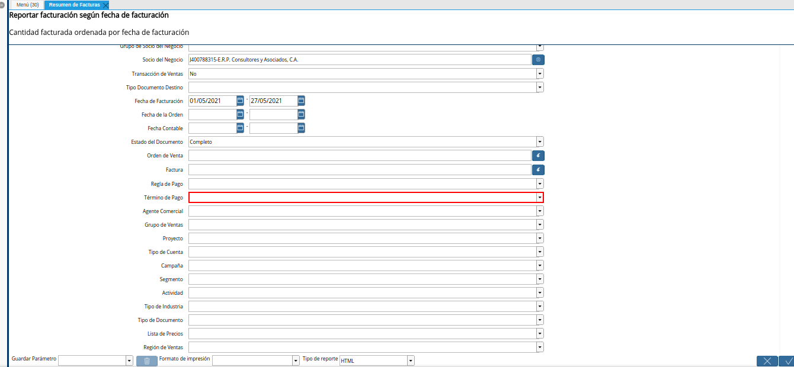
Imagen 16. Campo Término de Pago
Seleccione en el campo “Agente Comercial”, el agente comercial por el cual requiere filtrar la información.
Imagen 17. Campo Agente Comercial
Seleccione en el campo “Grupo de Ventas”, el grupo de ventas por el cual requiere filtrar la información.
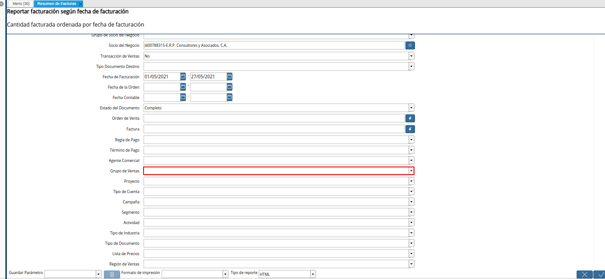
Imagen 18. Campo Grupo de Ventas
Seleccione en el campo “Proyecto”, el proyecto por el cual requiere filtrar la información.
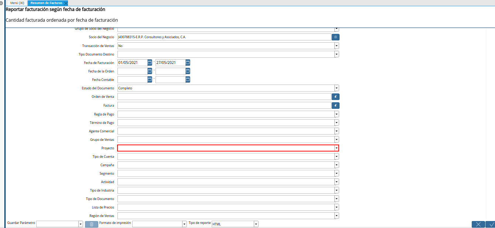
Imagen 19. Campo Proyecto
Seleccione en el campo “Tipo de Cuenta”, el tipo de cuenta por el cual requiere filtrar la información.
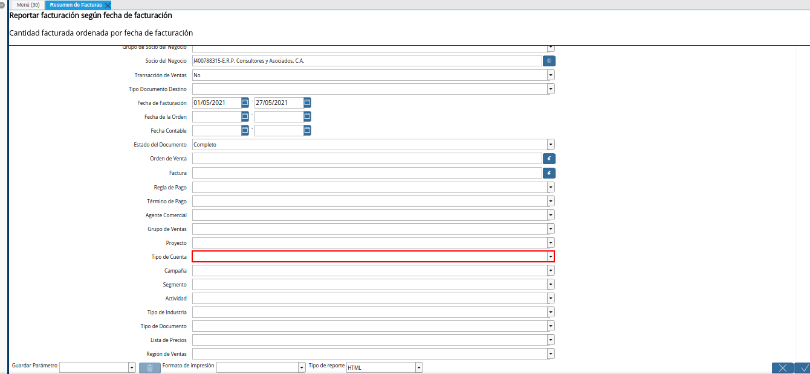
Imagen 20. Campo Tipo de Cuenta
Seleccione en el campo “Campaña”, la campaña por la cual requiere filtrar la información.
Imagen 21. Campo Campaña
Seleccione en el campo “Segmento”, el segmento por el cual requiere filtrar la información.
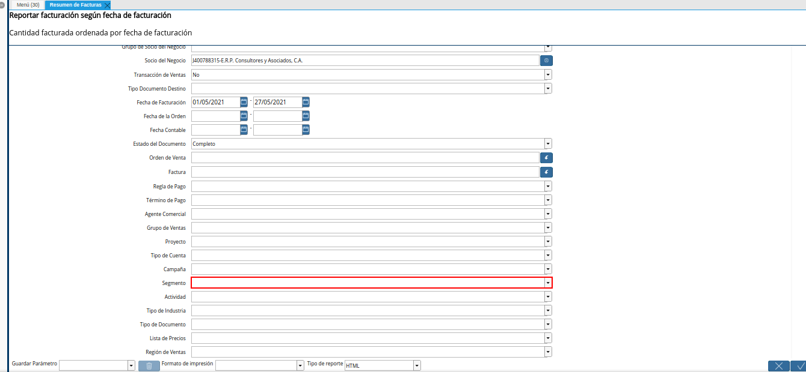
Imagen 22. Campo Segmento
Seleccione en el campo “Actividad”, la actividad por la cual requiere filtrar la información.
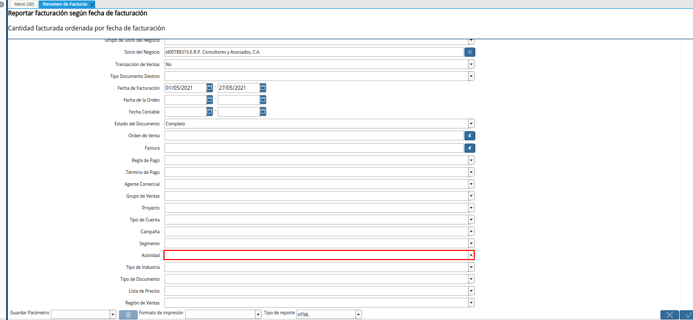
Imagen 23. Campo Actividad
Seleccione en el campo “Tipo de Industria”, el tipo de industria por el cual requiere filtrar la información.
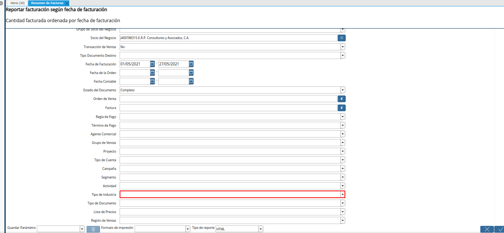
Imagen 24. Campo Tipo de Industria
Seleccione en el campo “Tipo de Documento”, el tipo de documento por el cual requiere filtrar la información.
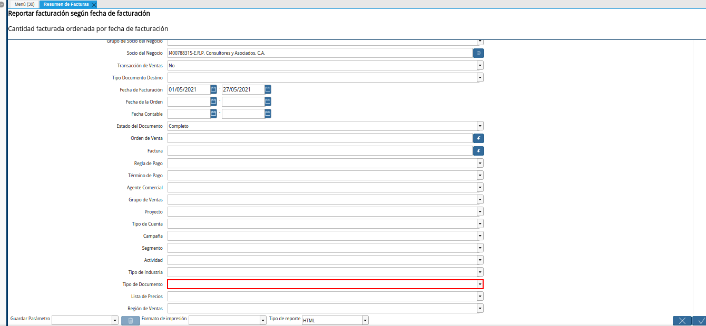
Imagen 25. Campo Tipo de Documento
Seleccione en el campo “Lista de Precios”, la lista de precios por la cual requiere filtrar la información.
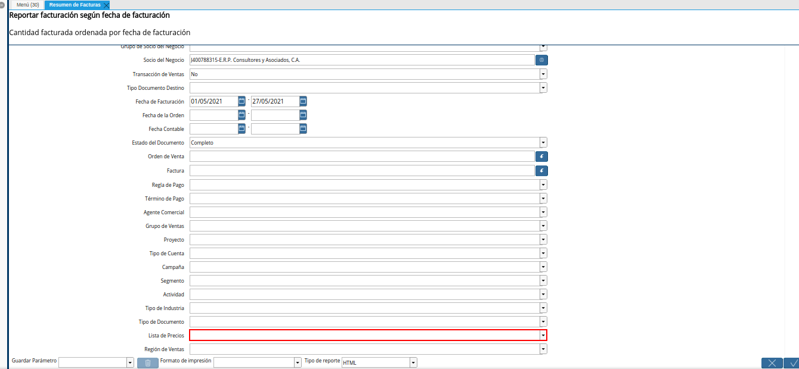
Imagen 26. Campo Lista de Precios
Seleccione en el campo “Región de Ventas”, la región de ventas por la cual requiere filtrar la información.
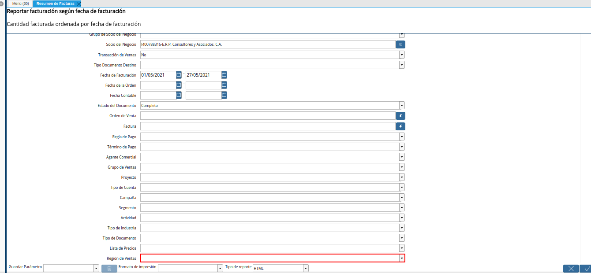
Imagen 27. Campo Región de Ventas
Note
En el campo “Tipo de Reporte” se puede definir el tipo reporte que se requiere generar:
Html: Con este tipo de reporte el usuario se podrá acercar a la factura o socio del negocio que desee visualizar de manera inmediata.
PDF: Con este tipo de reporte el usuario tiene acceso inmediato al reporte en formato “PDF” para imprimir el mismo.
Seleccione la opción “OK” para generar el reporte en base a lo seleccionado en los campos nombrados anteriormente.
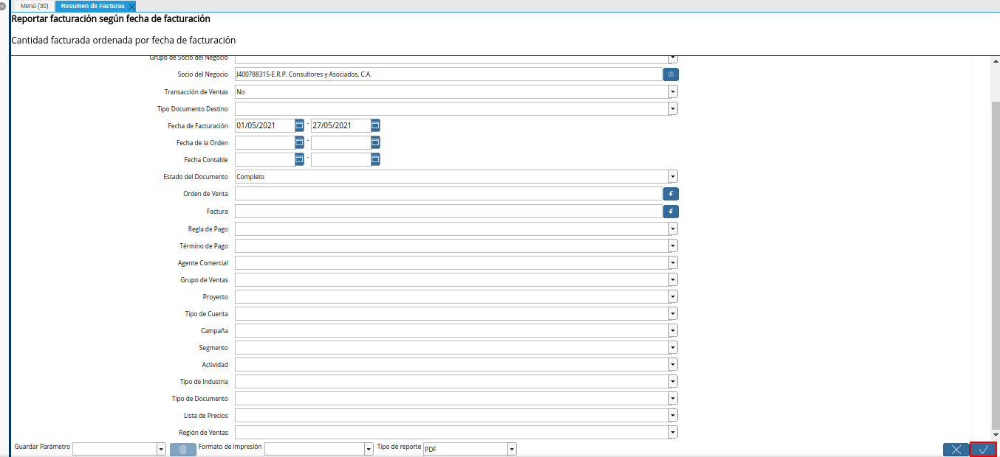
Imagen 28. Opción OK
Podrá visualizar de la siguiente manera, el reporte “Resumenn de Facturas”.
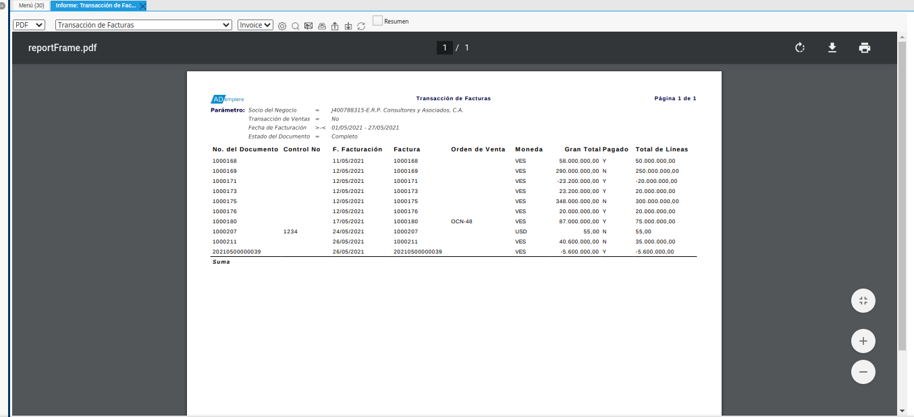
Imagen 29. Reporte Resumen de Facturas
Note
En el reporte puede visualizar las siguientes columnas:
No de Documento: El número de documentlo que identifica el registro de la factura.
Control No.: El número de control del registro de la factura.
Fecha de Facturación: La fecha en la cual fue emitida la factura.
Factura: Refleja el documento aplicado para la venta. Ejemplo: Notas de Créditos, Facturas de Cuentas por Cobrar, entre otros.
Órdenes de Ventas: El numero de documento que identifica el registro de la orden asociada a la factura.
Moneda: La moneda con la cual se realizó la transacción.
Gran Total: El monto total del documento, icluyendo impuestos y totales de fletes en la moneda del documento.
Pagado: Indica si el documento fue pagado o no. Ejemplo: Y (Pagada), N (No pagado).
Total de Lineas: El total de todas las líneas que contiene la factura.